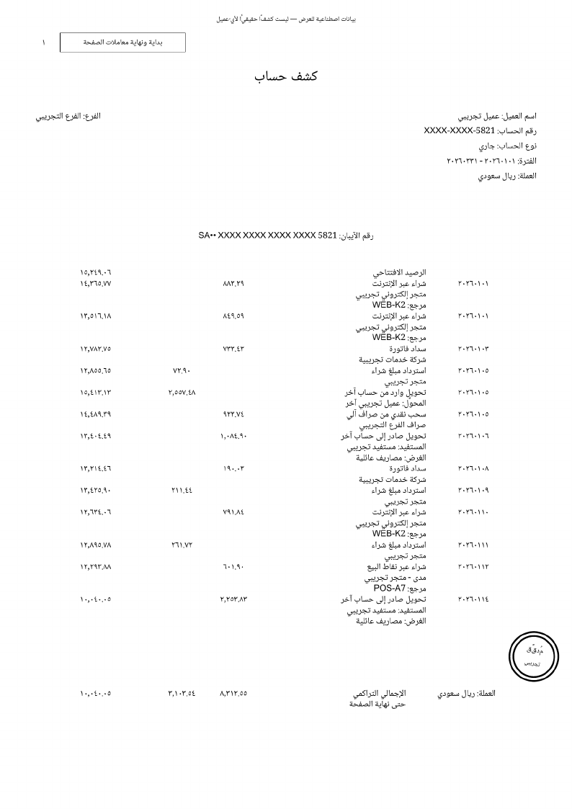

تعذّر تحميل الأرقام. أعد تحميل الصفحة.
هل يطابق هذا المبلغ؟
صفُّ من صفحةٍ ممسوحة. الرصيدُ قبله والرصيدُ بعده يحدّدان المبلغ، وهذا ما قرأه النظام:
اكشف الجواب
قارئُ النظام نفسُه أخطأ في هذا الصفّ، فأمسكت السلسلةُ خطأه، وعُرض الصفُّ عليك قبل أن يدخل أيَّ مجموعٍ أو جواب.
لماذا يصعب هذا الملفّ على ما تعلّمناه
الكشفُ صورٌ ممسوحة، بلا طبقة نصّ تحتها، وأرقامُه هنديّة، ووصفُ الحركة يمتدّ أسطرًا تحت مبلغها.

حَكَمان يراجعان كلَّ رقم
القراءة
نموذجُ رؤيةٍ يقرأ كلَّ صفٍّ كما طُبع، والرقمُ الهنديُّ يصير رقمًا يُحسب به.
| البيان | المبلغ كما طُبع | كما قُرئ | الرصيد |
|---|
السلسلة
كلُّ رصيدٍ يساوي الرصيدَ قبله زائدًا الإيداعَ أو ناقصًا السحب. فإن طابق ثبت الصفّ، وإن خالف وقفت السلسلةُ عنده.
التذييل
في ذيل كلّ صفحةٍ مجموعٌ تراكميٌّ مطبوع. والفرقُ بين ذيلين متتاليين يُقابَل بمجموع ما قرأه النظامُ من حركات الصفحة، وهو حَكَمٌ من خارج السلسلة.
| الصفحة | المدين التراكميّ | الدائن التراكميّ | الحكم |
|---|
أرقامُ هذا القسم وما قبله من كشفٍ اصطناعيّ قرأه النظام.
على كشفٍ حقيقيّ
القراءةُ نفسُها والحَكَمان نفساهما على كشفِ حسابٍ حقيقيٍّ طويل:
أرقامٌ إجماليّةٌ من قراءة كشفٍ حقيقيّ لصاحب المشروع، ولا رقمَ هنا من صفوفه. ومصدرُها لقطةُ الأرقام المحروسة في المستودع، وهي نفسُها في التقرير.
اسأله: الأدواتُ تحسب
الوكيلُ لا يجمع بنفسه. يستدعي أدواتٍ تحسب من دفتر SQLite الذي أثبتته السلسلة: المجموعُ والعدّ، وأعلى رصيدٍ وأدناه، وملخّصُ الصفحة، والبحثُ في البيان. وحين لا يجد جوابًا يقول ذلك.
- الكشفُ الممسوحصورٌ بلا طبقة نصّ
- قارئُ الصفحاتنموذجُ رؤيةٍ عبر OpenRouter مباشرةً، خارج LangChain
- الحَكَمانالسلسلة والتذييل
- الدفتر
SQLite - وكيلُ LangChain
create_agentو@tool: أدواتٌ تحسب من الدفترFAISS: استرجاعٌ بمرشّح الصفحةChatPromptTemplate: قالبُ التلقينresponse_format: جوابٌ منظَّمSqliteSaverوtrim_messages: ذاكرةُ الحوار
- الجوابمع موضع كلّ رقم
قارئُ الصفحات وحده خارج LangChain بقرارٍ مقيس: الطلبُ الذي يبنيه غلافُها يختلف عن الطلب الذي قيست عليه القراءة (القياس).
الحدود
- المدعومُ الآن كشوفُ مصرف الراجحي الممسوحةُ وحدها، ولا يُفتح بنكٌ آخر قبل أن يُؤهَّل.
- القراءةُ الحيّةُ لكشفك بمفتاح OpenRouter الخاصّ بك وحده، وما يُحفظ ومتى يُحذف مكتوبٌ في «قاعدة الخصوصية» داخل التطبيق.
- الصفُّ الذي لا يُثبته الحساب يُعرض عليك لتحكم فيه. القارئُ الأخيرُ إنسان.
جرّبه بنفسك
«جرّب الآن» يفتح هذا الكشفَ الاصطناعيَّ مقروءًا مسبقًا: تصفّح صفوفه واسأل دفتره عن المجاميع، بلا مفتاحٍ وبلا كلفة.
جرّب الآن بلا مفتاح